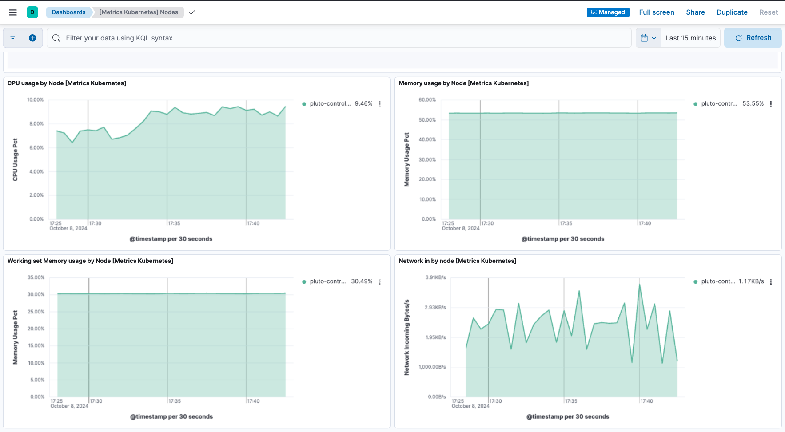
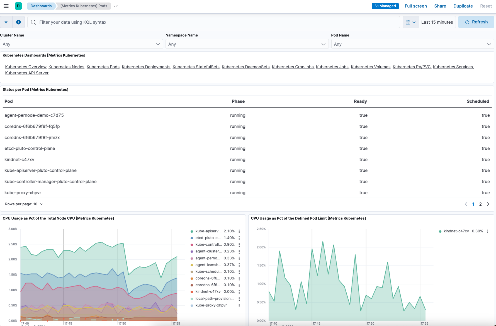

Example: Install standalone Elastic Agent on Kubernetes using Helm
editThis functionality is in technical preview and may be changed or removed in a future release. Elastic will work to fix any issues, but features in technical preview are not subject to the support SLA of official GA features.
This example demonstrates how to install standalone Elastic Agent on a Kubernetes system using a Helm chart, gather Kubernetes metrics and send them to an Elasticsearch cluster in Elastic Cloud, and then view visualizations of those metrics in Kibana.
For an overview of the Elastic Agent Helm chart and its benefits, refer to Install Elastic Agent on Kubernetes using Helm.
This guide takes you through these steps:
Prerequisites
editTo get started, you need:
- A local install of the Helm Kubernetes package manager.
- An Elastic Cloud hosted Elasticsearch cluster on version 8.16 or higher.
- An Elasticsearch API key.
- An active Kubernetes cluster.
-
A local clone of the elastic/elastic-agent GitHub repository. Make sure to use the
8.16branch to ensure that Elastic Agent has full compatibility with the Helm chart.
Install Elastic Agent
edit- Open your Elastic Cloud deployment, and from the navigation menu select Manage this deployment.
- In the Applications section, copy the Elasticsearch endpoint and make a note of the endpoint value.
-
Open a terminal shell and change into a directory in your local clone of the
elastic-agentrepo. -
llowCopy this command.
helm install demo ./deploy/helm/elastic-agent \ --set kubernetes.enabled=true \ --set outputs.default.type=ESPlainAuthAPI \ --set outputs.default.url=<ES-endpoint>:443 \ --set outputs.default.api_key="API_KEY"
Note that the command has these properties:
-
helm installruns the Helm CLI install tool. -
demogives a name to the installed chart. You can choose any name. -
./deploy/helm/elastic-agentis a local path to the Helm chart to install (in time it’s planned to have a public URL for the chart). -
--set kubernetes.enabled=trueenables the Kubernetes integration. The CLI parameter overrides the defaultfalsevalue forkubernetes.enabledin the Elastic Agent values.yaml file. -
--set outputs.default.type=ESPlainAuthAPIsets the authentication method for the Elasticsearch output to require an API key (again, overriding the value set by default in the Elastic Agent values.yaml file). -
--set outputs.default.url=<ES-endpoint>:443sets the address of your Elastic Cloud deployment, where Elastic Agent will send its output over port 443. -
--set outputs.default.api_key="API_KEY"sets the API key that Elastic Agent will use to authenticate with your Elasticsearch cluster.For a full list of all available YAML settings and descriptions, refer to the Elastic Agent Helm Chart Readme.
-
-
Update the command to replace:
-
<ES-endpoint>with the Elasticsearch endpoint value that you copied earlier. -
<API_KEY>with your API key name.After your updates, the command should look something like this:
helm install demo ./deploy/helm/elastic-agent \ --set kubernetes.enabled=true \ --set outputs.default.type=ESPlainAuthAPI \ --set outputs.default.url=https://demo.es.us-central1.gcp.foundit.no:443 \ --set outputs.default.api_key="A6ecaHNTJUFFcJI6esf4:5HJPxxxxxxxPS4KwSBeVEs"
-
-
Run the command.
The command output should confirm that three Elastic Agents have been installed as well as the Kubernetes integration:
... Installed agents: - clusterWide [deployment - standalone mode] - ksmSharded [statefulset - standalone mode] - perNode [daemonset - standalone mode] Installed integrations: - kubernetes [built-in chart integration] ...
-
Run the
kubectl get pods -n defaultcommand to confirm that the Elastic Agent pods are running:NAME READY STATUS RESTARTS AGE agent-clusterwide-demo-77c65f6c7b-trdms 1/1 Running 0 5m18s agent-ksmsharded-demo-0 2/2 Running 0 5m18s agent-pernode-demo-c7d75 1/1 Running 0 5m18s
- In your Elastic Cloud deployment, from the Kibana menu open the Integrations page.
-
Run a search for
Kubernetesand then select the Kubernetes integration card. - On the Kubernetes integration page, select Install Kubernetes assets. This installs the dashboards, Elasticsearch indexes, and other assets used to monitor your Kubernetes cluster.
-
On the Kubernetes integration page, open the Assets tab and select the [Metrics Kubernetes] Nodes dashboard.
On the dashboard, you can view the status of your Kubernetes nodes, including metrics on memory, CPU, and filesystem usage, network throughput, and more.
 -
On the Kubernetes integration page, open the Assets tab and select the [Metrics Kubernetes] Pods dashboard. As with the nodes dashboard, on this dashboard you can view the status of your Kubernetes pods, including various metrics on memory, CPU, and network throughput.

Upgrade your Elastic Agent configuration
editNow that you have Elastic Agent installed, collecting, and sending data successfully, let’s try changing the agent configuration settings.
In the previous install example, three Elastic Agent nodes were installed. One of these nodes, agent-ksmsharded-demo-0, is installed to enable the kube-state-metrics service. Let’s suppose that you don’t need those metrics and would like to upgrade your configuration accordingly.
-
Copy the command that you used earlier to install Elastic Agent:
helm install demo ./deploy/helm/elastic-agent \ --set kubernetes.enabled=true \ --set outputs.default.type=ESPlainAuthAPI \ --set outputs.default.url=<ES-endpoint>:443 \ --set outputs.default.api_key="API_KEY"
-
Update the command as follows:
-
Change
installto upgrade. -
Add a parameter
--set kubernetes.state.enabled=false. This will override the defaulttruevalue for the settingkubernetes.statein the Elastic Agent values.yaml file.helm upgrade demo ./deploy/helm/elastic-agent \ --set kubernetes.enabled=true \ --set kubernetes.state.enabled=false \ --set outputs.default.type=ESPlainAuthAPI \ --set outputs.default.url=<ES-endpoint>:443 \ --set outputs.default.api_key="API_KEY"
-
Change
-
Run the command.
The command output should confirm that now only two Elastic Agents are installed together with the Kubernetes integration:
... Installed agents: - clusterWide [deployment - standalone mode] - perNode [daemonset - standalone mode] Installed integrations: - kubernetes [built-in chart integration] ...
You’ve upgraded your configuration to run only two Elastic Agents, without the kube-state-metrics service. You can similarly upgrade your agent to change other settings defined in the in the Elastic Agent values.yaml file.
Change Elastic Agent’s running mode
editBy default Elastic Agent runs under the elastic user account. For some use cases you may want to temporarily change an agent to run with higher privileges.
-
Run the
kubectl get pods -n defaultcommand to view the running Elastic Agent pods:NAME READY STATUS RESTARTS AGE agent-clusterwide-demo-77c65f6c7b-trdms 1/1 Running 0 5m18s agent-pernode-demo-c7d75 1/1 Running 0 5m18s
-
Now, run the
kubectl execcommand to enter one of the running Elastic Agents, substituting the correct pod name returned from the previous command. For example:kubectl exec -it pods/agent-pernode-demo-c7d75 -- bash
-
From inside the pod, run the Linux
ps auxcommand to view the running processes.ps aux
The results should be similar to the following:
USER PID %CPU %MEM VSZ RSS TTY STAT START TIME COMMAND elastic+ 1 0.0 0.0 1936 416 ? Ss 21:04 0:00 /usr/bin/tini -- /usr/local/bin/docker-entrypoint -c /etc/elastic-agent/agent.yml -e elastic+ 10 0.2 1.3 2555252 132804 ? Sl 21:04 0:13 elastic-agent container -c /etc/elastic-agent/agent.yml -e elastic+ 37 0.6 2.0 2330112 208468 ? Sl 21:04 0:37 /usr/share/elastic-agent/data/elastic-agent-d99b09/components/agentbeat metricbeat -E elastic+ 38 0.2 1.7 2190072 177780 ? Sl 21:04 0:13 /usr/share/elastic-agent/data/elastic-agent-d99b09/components/agentbeat filebeat -E se elastic+ 56 0.1 1.7 2190136 175896 ? Sl 21:04 0:11 /usr/share/elastic-agent/data/elastic-agent-d99b09/components/agentbeat metricbeat -E elastic+ 68 0.1 1.8 2190392 184140 ? Sl 21:04 0:12 /usr/share/elastic-agent/data/elastic-agent-d99b09/components/agentbeat metricbeat -E elastic+ 78 0.7 2.0 2330496 204964 ? Sl 21:04 0:48 /usr/share/elastic-agent/data/elastic-agent-d99b09/components/agentbeat filebeat -E se elastic+ 535 0.0 0.0 3884 3012 pts/0 Ss 22:47 0:00 bash elastic+ 543 0.0 0.0 5480 2360 pts/0 R+ 22:47 0:00 ps aux
-
In the command output, note that Elastic Agent is currently running as the
elasticuser:elastic+ 10 0.2 1.3 2555252 132804 ? Sl 21:04 0:13 elastic-agent container -c /etc/elastic-agent/agent.yml -e
-
Run
exitto leave the Elastic Agent pod. -
Run the
helm upgradecommand again, this time adding the parameter--set agent.unprivileged=falseto override the defaulttruevalue for that setting.helm upgrade demo ./deploy/helm/elastic-agent \ --set kubernetes.enabled=true \ --set kubernetes.state.enabled=false \ --set outputs.default.type=ESPlainAuthAPI \ --set outputs.default.url=<ES-endpoint>:443 \ --set outputs.default.api_key="API_KEY" \ --set agent.unprivileged=false
-
Run the
kubectl get pods -n defaultcommand to view the running Elastic Agent pods:NAME READY STATUS RESTARTS AGE agent-clusterwide-demo-77c65f6c7b-trdms 1/1 Running 0 5m18s agent-pernode-demo-s6s7z 1/1 Running 0 5m18s
-
Re-run the
kubectl execcommand to enter one of the running Elastic Agents, substituting the correct pod name. For example:kubectl exec -it pods/agent-pernode-demo-s6s7z -- bash
-
From inside the pod, run the Linux
ps auxcommand to view the running processes.USER PID %CPU %MEM VSZ RSS TTY STAT START TIME COMMAND root 1 0.0 0.0 1936 452 ? Ss 23:10 0:00 /usr/bin/tini -- /usr/local/bin/docker-entrypoint -c /etc/elastic-agent/agent.yml -e root 9 0.9 1.3 2488368 135920 ? Sl 23:10 0:01 elastic-agent container -c /etc/elastic-agent/agent.yml -e root 27 0.9 1.9 2255804 203128 ? Sl 23:10 0:01 /usr/share/elastic-agent/data/elastic-agent-d99b09/components/agentbeat metricbeat -E root 44 0.3 1.8 2116148 187432 ? Sl 23:10 0:00 /usr/share/elastic-agent/data/elastic-agent-d99b09/components/agentbeat metricbeat -E root 64 0.3 1.8 2263868 188892 ? Sl 23:10 0:00 /usr/share/elastic-agent/data/elastic-agent-d99b09/components/agentbeat metricbeat -E root 76 0.4 1.8 2190136 190972 ? Sl 23:10 0:00 /usr/share/elastic-agent/data/elastic-agent-d99b09/components/agentbeat filebeat -E se root 100 1.2 2.0 2256316 207692 ? Sl 23:10 0:01 /usr/share/elastic-agent/data/elastic-agent-d99b09/components/agentbeat filebeat -E se root 142 0.0 0.0 3752 3068 pts/0 Ss 23:12 0:00 bash root 149 0.0 0.0 5480 2376 pts/0 R+ 23:13 0:00 ps aux
-
Run
exitto leave the Elastic Agent pod.
You’ve upgraded the Elastic Agent privileges to run as root. To change the settings back, you can re-run the helm upgrade command with --set agent.unprivileged=true to return to the default unprivileged mode.
Tidy up
editAfter you’ve run through this example, run the helm uninstall command to uninstall Elastic Agent.
helm uninstall demo
The uninstall should be confirmed as shown:
release "demo" uninstalled
As a reminder, for full details about using the Elastic Agent Helm chart refer to the Elastic Agent Helm Chart Readme.